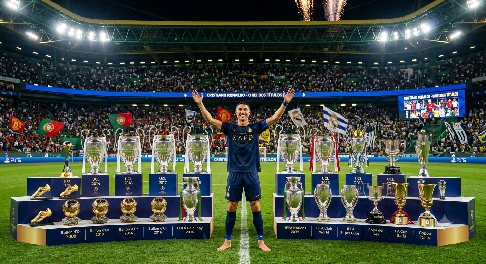

por:Raul Cordeiro.
Cristiano Ronaldo dos Santos Aveiro nasceu em 5 de fevereiro de 1985.
>No Funchal, na Ilha da Madeira, Portugal. Desde pequeno, era apaixonado por futebol e demonstrava um talento enorme.
Ele começou no Andorinha, passou pelo Nacional da Madeira e, ainda adolescente, foi para o Sporting CP, em Lisboa.
Considerado um dos maiores jogadores de futebol de todos os tempos, ele conquistou cinco prêmios de Melhor do Mundo/Bola de Ouro e acumula passagens marcantes por Sporting, Manchester United, Real Madrid, Juventus e Al-Nassr.
Manchester United (2003–2009): Destacou-se sob a batuta de Sir Alex Ferguson, conquistando a sua primeira Liga dos Campeões e a primeira Bola de Ouro
Real Madrid (2009–2018): Tornou-se o maior artilheiro da história do clube merengue, faturando quatro edições da Liga dos Campeões e diversos títulos nacionais e individuais.
Juventus (2018–2021) e Retorno ao United (2021–2022): Mteve alto rendimento goleador na Itália e retornou brevemente à Inglaterra antes de novos desafios.
Obrigado!!!!!!